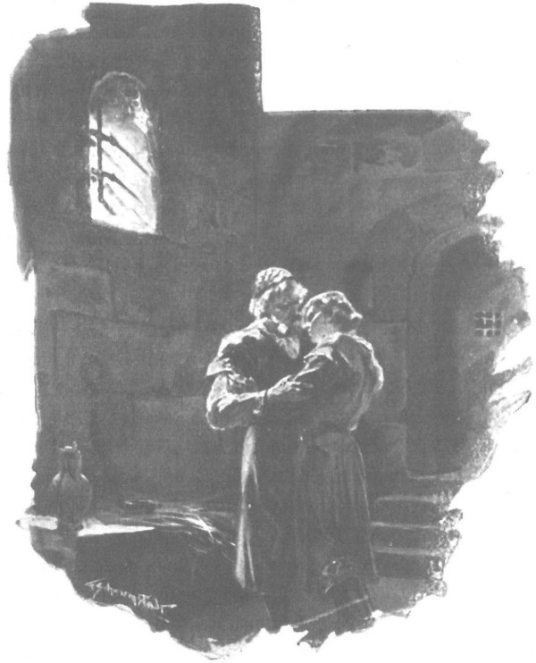
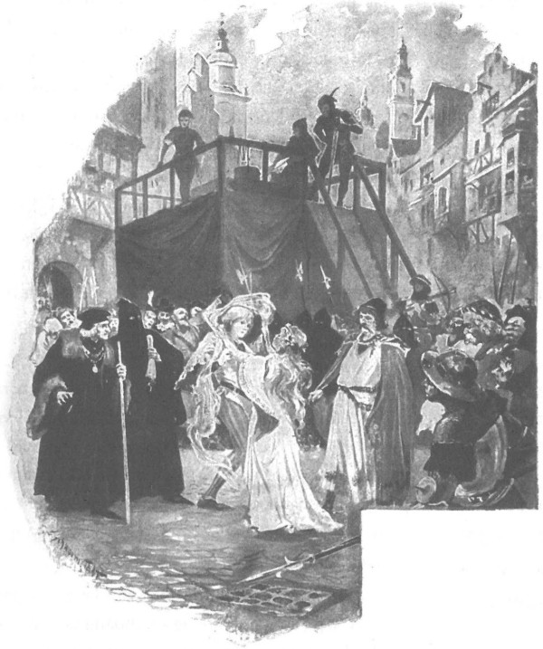

Đúng lúc ấy đột ngột xảy ra một sự kiện khiến tất thảy những việc khác mất hẳn ý nghĩa. Gần tối ngày hai mươi mốt tháng sáu, từ hoàng cung truyền đi tin hoàng hậu bị yếu đột ngột. Các danh y được triệu vào cung, lưu lại phòng hoàng hậu cùng đức giám mục Wysz suốt cả đêm. Qua miệng các thị nữ phục dịch trong cung, người ta được biết hoàng hậu đang có nguy cơ bị sinh non. Ngay trong đêm ấy, viên trấn thành Kraków là Jaśko Topór xứ Tęczyn đã phái các điệp sứ cấp báo tin này với đức vua đang vắng mặt. Sáng hôm sau, tin dữ đã như sấm lan khắp thành đô và vùng phụ cận. Đó là ngày Chúa nhật, vì vậy nhiều đám người tụ tập đông nghẹt trong các nhà thờ được các vi linh mục khuyến cáo nên cầu nguyện cho sức khỏe của hoàng hậu. Lúc này, mọi hồ nghi đều tan biến. Thế là dân tứ xứ tụ họp về đây đón chờ lễ đặt tên cho ấu chúa cùng giới trang chủ quý tộc và đại biểu thương gia kéo nhau vào cung, các phường thợ thủ công và hội đoàn mang theo cả cờ hiệu.
Kể từ trưa, những đám người đông không tính xuể vây quanh cung Wawel, các đội cung thủ ngự lâm giữ trật tự, buộc mọi người phải bình tĩnh và yên lặng. Phố xá gần như hoàn toàn vắng người, trên các đường phố thỉnh thoảng mới có từng đoàn nông phu vùng lân cận tiến về phía hoàng cung, họ cũng đã hay tin bệnh tình hoàng hậu kính yêu.
Sau cùng, ở cổng chính hoàng cung xuất hiện đức giám mục và viên trấn thành, cùng với họ là các tăng lữ của nhà thờ chánh xứ, các ủy viên hội đồng thành phố cùng giới hiệp sĩ. Họ tản dọc tường thành, chia nhau đi vào đám dân chúng, vẻ mặt mang tin mới nhưng mở miệng lại truyền nghiêm lệnh: khi nghe tin, cấm tuyệt đối không được hò reo lớn tiếng làm kinh động người bệnh. Rồi họ thông báo cho toàn thể chúng dân biết hoàng hậu đã sinh hạ một công chúa. Tin ấy khiến con tim muôn dân tràn ngập sướng vui, nhất là ngay lúc ấy, người ta còn biết thêm rằng tuy hoa nở trước kỳ nhưng hiện chưa thấy dấu hiệu gì nguy hiểm đe dọa tính mạng hai mẹ con. Những đám đông bắt đầu tản đi, bởi lẽ ở gần cung điện không được phép hò reo, trong khi ai nấy đều đang muốn được biểu lộ niềm hoan hỉ tột độ của mình thành lời.
Khi những đường phố dẫn tới quảng trường chợ chính đã tràn ngập người, thì lập tức những tiếng ca hát và reo hò vui sướng vang lên. Không một ai thất vọng hay buồn bã vì chuyện hoàng hậu đã sinh con gái. “Đức vua Lui [124] không có con trai nối dõi, trao vương quyền lại cho nữ vương Jadwiga, thì đã sao đâu?” Người ta bảo nhau. “Nhờ cuộc nhân duyên của bà với đức vua Jagiełło, vương quốc ta lại trở nên hùng cường gấp đôi. Giờ cũng vậy thôi. Tìm đâu được một vị nữ chúa kế vị ngai vàng có thể sánh ngang với công chúa chúng ta, khi mà hoàng đế Thánh chế La Mã cũng như các quốc vương khác đều không có một quốc gia vĩ đại, một vùng đất mênh mông, một giới hiệp sĩ đông đảo như chúng ta! Các quận công hùng cường nhất trên thế gian sẽ phải tranh nhau cầu hôn với công chúa, sẽ phải khom lưng cúi chào đức vua và hoàng hậu chúng ta, sẽ phải ngựa xe lui tới kinh thành Kraków. Giới thương gia ta sẽ tha hồ thu lợi. Chưa chừng một quốc gia nào đó như Séc hay Hung lại muốn nhập luôn vào vương quốc chúng ta cũng nên? Đám thương gia bàn tán như thế, và niềm sung sướng mỗi lúc một lan rộng hơn. Người ta mở tiệc tại nhà riêng cũng như các tửu điếm. Quảng trường chợ bập bùng trong đêm với hằng hà sa số đèn nến. Khắp các vùng phụ cận kinh thành Kraków, ngày càng có nhiều toán nông dân kéo vào thành, dựng trại bên những cỗ xe ngựa. Dân Do Thái trò chuyện náo nhiệt cạnh thánh đường Do Thái ở Kazimierz [125] . Mãi đến khuya lắm, khi trời gần rạng sáng, quảng trường chợ vẫn nhộn nhịp tưng bừng, nhất là bên cạnh nhà hội đồng thành phố và nhà để cân, cứ tưng bừng như đang giữa phiên chợ lớn. Người ta kháo nhau tin tức, người ta phái người chạy lên hoàng cung lấy tin, người ta bâu quanh những người mang tin mới trở về thành những đám đông tấp nập.
Tin xấu nhất trong những tin mới ấy là việc đức giám mục Piotr đã làm lễ rửa tội cho ấu chúa ngay trong đêm. Tin ấy khiến người ta ngờ rằng chắc công chúa yếu lắm. Nhưng nhiều người đàn bà trong giới thị dân giàu kinh nghiệm lại kể ra những trường hợp mà đứa trẻ sơ sinh tưởng chết mười mươi lại khỏe lên sau khi chịu lễ rửa tội.
Vì vậy, niềm hy vọng lại được củng cố, và nó càng mạnh thêm lên khi người ta nghe cái tên được đặt cho công chúa. Họ bảo nhau rằng không một đứa trẻ trai hoặc gái nào mang tên Bonifacy hay Bonifacja lại có thể chết ngay sau khi chào đời, bởi chúng đã được giao phó sứ mệnh thực thi điều thiện, mà trong những năm đầu - nhất là trong những tháng tuổi đầu tiên - đứa trẻ sơ sinh đâu đã có thể làm điều lành hay điều ác.
Song, ngày hôm sau, từ hoàng cung truyền ra những tin tức không lành về cả hài nhi lẫn sản phụ khiến cả đô thành xao xuyến. Trong các nhà thờ, suốt ngày đêm người ta tụ tập cầu nguyện đông nghịt như giữa kỳ ăn chay kiêng cữ. Người ta đã dâng hiến vô số lễ vật để cầu nguyện cho sức khỏe của hoàng hậu và công chúa. Thật xúc động trước cảnh những người nông dân nghèo khổ mang đến hiến từng góc tư bánh mì, một con cừu non, mấy con gà, vài xâu nấm khô hoặc mấy lẵng hạt dẻ. Biết bao đồ lễ vật có giá trị lớn được tế hiến bởi giới hiệp sĩ, thương gia và các phường thợ thủ công. Người ta phái sứ giả mang đồ tế hiến đến những nơi thiêng liêng khẩn cầu. Các nhà chiêm tinh chăm chú theo dõi bầu trời sao. Ở ngay tại đô thành Kraków, người ta tổ chức những đám rước lễ trọng thể. Tất cả các phường thợ và hội bạn đều tham gia. Cả thành đô sặc sỡ đủ sắc cờ xí. Có cả một đám rước lễ của trẻ đồng ấu, bởi người ta cho rằng những sinh linh non tơ vô tội ấy dễ cầu xin Đức Chúa ban ơn lành hơn cả. Càng ngày càng có thêm nhiều đám người mới, rất đông đảo, từ các vùng lân cận kéo vào thành.
Cứ thế, ngày ngày nối nhau trôi qua trong tiếng chuông đổ hồi rền rĩ, trong tiếng ồn ào huyên náo từ các nhà thờ, trong những cuộc hành lễ cầu nguyện và những đám rước. Nhưng một tuần lễ trôi qua, thấy hoàng hậu đang bệnh trọng và ấu chúa sơ sinh đều vẫn còn sống thì niềm hy vọng bắt đầu len vào những con tim. Mọi người tin rằng Đức Chúa không nỡ mang đi sớm như vậy vị nữ chúa của vương quốc, người đã thực hiện được từng ấy việc lớn lao cho đất nước. Không lẽ vị nữ sứ đồ đã hy sinh niềm hạnh phúc bản thân để lôi kéo dân tộc ngoại đạo cuối cùng của châu Âu đến với Ki-tô giáo lại phải bỏ dở dang công cuộc vĩ đại ấy mà đi? Các học giả nhắc đến bao việc bà đã làm cho Viện đại học, các tăng lữ nhắc bao việc bà đã làm sáng danh Chúa, các chính khách nhắc bao việc bà đã làm vì hòa bình giữa các vương quốc Ki-tô giáo, những nhà lập pháp - bao việc bà đã làm vì công lý, những người nghèo - bao việc bà đã làm vì những kẻ bần dân. Và không một ai có thể chấp nhận rằng sự sống của sinh linh cần thiết nhường kia cho toàn vương quốc và thế giới lại có thể bị cắt đứt quá sớm.
Nhưng ngày mười ba tháng bảy, những hồi chuông tang tóc rền vang báo tin cái chết của ấu chúa. Cả thành phố lại cồn lên, nỗi lo âu lại đè nặng lòng người, đám đông lại quây quanh hoàng cung chờ hỏi thăm sức khỏe hoàng hậu. Nhưng lần này không có ai bước ra báo tin lành nữa. Vẻ mặt các triều thần đi vào rồi ra khỏi cổng cung đình đều u ám và ngày càng trở nên âu sầu hơn. Người ta đồn rằng đức cha Stanislaw xứ Skarbimie [126] , đại học sĩ khoa học khai phóng [127] ở Kraków, ngày đêm túc trực không rời hoàng hậu một bước. Ngày nào hoàng hậu cũng được rước Mình Thánh Chúa. Người ta dồn rằng sau mỗi cuộc ban thánh thể, phòng hoàng hậu đều tràn ngập ánh sáng thiên giới. Một số người được tận mắt nom thấy ánh sáng lọt qua cửa sổ, nhưng cảnh tượng ấy chỉ càng khiến cho những kẻ bề tôi hết lòng tận tụy với bà thêm phần sợ hãi, bởi đó là dấu hiệu cho thấy cuộc sống thiên giới phi phàm đã bắt đầu đến với bà.
Tuy vậy, một số người vẫn không tin sẽ có thể xảy ra điều kinh khủng kia, họ tự cổ vũ bằng niềm hy vọng rằng thiên đình vốn công minh sẽ chấp nhận chỉ một sinh linh dâng hiến. Nhưng sáng sớm thứ Sáu ngày mười bảy tháng bảy, một tin kinh hoàng lan truyền trong dân chúng: hoàng hậu đang hấp hối! Tất thảy những ai đang sống đều vội vã chạy ngay đến dưới chân hoàng cung. Thành phố vắng kiệt người, chỉ còn lại những kẻ tật nguyền không thể đi lại được, ngay cả các bà mẹ trẻ cũng bế con chạy vội đến túc trực ở cổng cung điện. Các cửa hiệu đóng kín, không một ai nấu ăn, mọi việc đều đình cả lại. Ngược lại, dưới chân đồi Wawel đen đặc một biển người thảng thốt, kinh hoàng và câm lặng.
Vào hồi mười ba giờ, quả chuông đại trên giáo đường chính chợt reo vang. Thoạt tiên người ta không hiểu ngay điều đó nghĩa là gì, dẫu nỗi lo sợ đã làm tóc trên đầu dựng ngược. Mọi ánh mắt đều hướng lên gác chuông, hướng vào chiếc đại hồng chung đang lắc lư mỗi lúc một rộng hơn, rồi tiếng rền rĩ ai oán của nó bắt đầu được những quả chuông khác trong khắp thành đô họa theo, như chuông nhà thờ dòng Franciskan, chuông nhà thờ Chúa Ba Ngôi, chuông nhà thờ Đức Mẹ Đồng Trinh Maria, và lan mãi xa hơn nữa, xa mãi khắp chiều rộng chiều dài của thành đô. Rốt cuộc người ta kinh hoàng hiểu ra ý nghĩa những tiếng chuông nức nở kia, bao hồn người thảng thốt và đau đớn, ngỡ như trái tim đồng của những chiếc chuông đập thẳng vào trái tim ứ máu của những ai đang có mặt.
Rồi đột nhiên trên tháp xuất hiện một lá cờ đại màu đen có hình đầu lâu to chính giữa, bên dưới bắt tréo hai đoạn xương trắng rợn. Khi ấy, không còn ai dám ngờ vực nữa: hoàng hậu đã dâng linh hồn lên Chúa.
Dưới chân hoàng cung òa lên tiếng kêu rú và tiếng khóc than của cả trăm ngàn con người, tiếng nức nở hòa trong những hồi chuông thảm đạm. Một số người lăn nhào ra đất, cào xé quần áo đang mặc, cào cấu mặt mày, những kẻ khác trân trân dán mắt vào tường hoàng cung trong cơn mù lòa thảng thốt, bao người rên lên những tiếng câm đặc, số nữa vươn tay về phía nhà thờ và phòng ở của hoàng hậu để kêu cầu phép nhiệm mầu cùng lượng nhân từ của Chúa. Nhưng đâu đấy cũng bật ra những tiếng nói giận dữ mà trong cơn cuồng phẫn tuyệt vọng đã biến thành những lời báng bổ: “Sao dám bắt hoàng hậu tôn kính của chúng tôi đi? Vậy những đám rước lễ, những lời cầu nguyện và van xin của chúng tôi để làm gì? Những đồ bạc vàng hiến tế đẹp đẽ tinh khôi là thế không mang lại gì ư? Chẳng lẽ lấy cứ lấy đi mà cho lại chẳng cho?” Còn những người khác chỉ biết lặp đi lặp lại một tiếng kêu than nức nở “Chúa ơi! Chúa ơi! Chúa ơi!” giữa những giọt lệ chứa chan. Một đám đông định xông vào hoàng cung để được nhìn lần cuối khuôn mặt thân yêu của hoàng hậu. Người ta không cho họ vào, nhưng hứa là vài ngày nữa linh cữu bà sẽ được quàn tại nhà thờ chánh xứ để ai cũng được đến bái yết và cầu nguyện bên bà. Mãi đến gần tối, những đám người âu sầu buồn thảm mới lần lượt tản ra, kéo xuống phố, kể lại cho nhau nghe về những giờ lâm chung của hoàng hậu, bàn tán về lễ tang sắp đến cùng những phép mầu nhiệm mà họ tin chắc là sẽ xảy ra bên linh cữu hoàng hậu cũng như quanh mộ bà. Người ta cũng truyền nhau tin đồn hoàng hậu sẽ được tuyên thánh ngay sau khi qua đời, và khi vài người tỏ ý nghi ngờ không rõ chuyện đó có thể hay không thì dân chúng liền phẫn nộ đe dọa sẽ từ bỏ Giáo hoàng Roma để theo Giáo hoàng Avignon.
Nỗi đau buồn thê lương giáng xuống thành đô, xuống toàn vương quốc, không chỉ chúng dân mà tất thảy mọi tầng lớp đều cảm thấy dường như cùng với cuộc đời mình, hoàng hậu đã tắt đi cả ngôi sao tốt lành từng chiếu soi cho đất nước. Ngay trong đám triều thần Kraków cũng có người nhìn về tương lai một cách u tối, bắt đầu đặt ra cho mình và cho người khác câu hỏi: Bây giờ sẽ ra sao? Liệu sau khi hoàng hậu qua đời, đức vua Jagiełło có còn được quyền trị vì toàn vương quốc nữa chăng, hay ngài phải trở về với đất Litva, với ngôi vị đại quận công? Một số kẻ đoán - mà như sau này chứng tỏ là không phải không có lý - rằng chính đức vua cũng muốn rời ngôi, và nếu thế thì vương quốc đâu còn là một vùng đất mênh mông; lại bắt đầu những cuộc tiến công đánh phá từ phía Litva và những cuộc phản kích đẫm máu của các cư dân hăng máu ở vương quốc Ba Lan. Giáo đoàn Thánh chiến sẽ lại mạnh lên, hoàng đế Thánh chế La Mã và vua Hung sẽ mạnh lên, còn vương quốc - cho đến ngày hôm qua vẫn là một trong những quốc gia hùng mạnh nhất thế gian - sẽ bị rơi vào suy sụp và chịu nhục.
Thấy trước khả năng phải chịu thua thiệt, đám thương nhân đang đứng trước vùng đất mênh mông mở rộng cửa đón mời của xứ Litva và Nga liền dâng lễ vật cầu nguyện cho đức vua Jagiełło tiếp tục trị vì toàn vương quốc. Nhưng nếu thế thì người ta lại tiên đoán cuộc chiến với Giáo đoàn sắp sửa nổ ra đến nơi, vì ai cũng hiểu rằng cho tới nay, chỉ mình hoàng hậu mới có thể kìm giữ cuộc chiến ấy mà thôi. Bây giờ, người ta nhắc nhau nhớ lại chuyện hồi trước. Phẫn nộ vì thói tham lam và hiếu sát của bọn hiệp sĩ Thánh chiến, hoàng hậu đã từng tiên tri cho chúng rằng: “Khi nào ta còn sống ta sẽ còn kìm giữ bàn tay và cơn thịnh nộ rất đúng lẽ của phu quân ta, nhưng các ngươi nên nhớ: sau khi ta qua đời, hình phạt sẽ giáng xuống, trừng phạt những tội lỗi mà các ngươi đã phạm!”
Trong xa hoa mù quáng, bọn hiệp sĩ Thánh chiến không sợ chiến tranh, vì chúng tưởng rằng sau cái chết của hoàng hậu, sự hấp dẫn do tính thánh thiện của bà sẽ không còn ngăn được dòng thác những kẻ tình nguyện từ các nước phương Tây kéo đến, và khi ấy từ đất Đức, Burgundia, Pháp và nhiều nước xa xôi khác nữa người ta sẽ kéo tới giúp chúng. Việc hoàng hậu Jadwiga qua đời là một sự kiện có ý nghĩa trọng đại đến nỗi gã Lichtenstein không đợi đến lúc vị vua đang vắng mặt trở về mà vôi trở về thành Malborg ngay, để báo tin cho đại thống lĩnh và hội đồng thánh giáo biết về mối đe dọa kia.
Các sứ thần Hung, Áo, La Mã và Séc cũng lên đường theo y, hoặc phái ngay điệp sứ về báo cho vua nước mình biết Đức vua Jagiełło trở về kinh thành Kraków, lòng đầy tuyệt vọng. Đức vua tuyên bố ngay với các quan rằng ngài không còn muốn làm vua nữa khi hoàng hậu đã ra đi, ngài sẽ trở về Litva cai quản vùng đất vốn được thừa kế. Nhưng sau đó, tư tiếc thương quá đỗi, hình như ngài trở nên hoàn toàn rã rời, không muốn giải quyết bất cứ một việc gì nữa, không trả lời một câu hỏi nào nữa, và chốc chốc ngài lại bùng nổ một cơn thịnh nộ kinh người - ngài tự giận mình đã rời thành đô, không ở bên linh sàng hoàng hậu lúc lâm chung, không được vĩnh biệt bà, không được nghe những lời bà dặn dò sau rốt, Linh mục Stanislaw xứ Skarbimierz và giám mục Wysz hoài công an ủi đức vua rằng đó chỉ là vì cơn bệnh hoàng hậu đến quá đột ngột, chứ theo mọi sự tính toán của người trần thì thế nào đức vua cũng trở về đúng lúc, nếu hoàng hậu mãn nguyệt khai hoa đúng kỳ. Những lý lẽ đó chẳng hề an ủi đức vua chút nào, chẳng làm nhạt phai nỗi đau đớn tiếc thương của ngài.
- Ta đâu còn là vua khi đã vắng bóng nàng, - đức vua nói với giám mục, - ta chỉ là một kẻ có tội bị dằn vặt đớn đau, không bao giờ còn biết thế nào là vui nữa.
Rồi ngài cúi gằm mặt xuống đất, không ai có thể khiến ngài nói ra thêm một lời nào nữa.
Trong lúc ấy, đầu óc mọi người đều tập trung cả vào việc lo cho tang lễ của hoàng hậu. Từ khắp đất nước lại kéo về kinh đô ngày càng nhiều những đoàn quan lại, quý tộc trang chủ và dân thường, nhất là những người nghèo khổ - họ trông chờ những của bố thí hậu hĩnh sẽ được ban phát khi cử hành lễ tang kéo dài cả tháng. Linh cữu hoàng hậu được quàn tại nhà thờ chánh xứ, đặt trên một bục cao, phần đầu được bố trí cao hơn hẳn phần chân, để chúng dân có thể nhìn rõ hơn dung mạo hoàng hậu. Tại nhà thờ chánh xứ, những buổi lễ cầu nguyện nối liền nhau không dứt, bên linh cữu cháy sáng hàng nghìn đèn nến. Trong vầng ánh sáng và hoa lá ấy, hoàng hậu nằm bình thản, mặt vẫn tươi tắn như một đóa hồng bạch huyền thoại diễm kiều, với đôi tay bắt tréo trước ngực đặt trên bộ váy áo màu thanh thiên. Dân chúng coi bà là một vị thánh nữ, họ dắt những kẻ bị bệnh cuồng, những người tàn tật, những đứa trẻ ốm yếu đến nơi bà yên nghỉ. Và trong nhà thờ thỉnh thoảng lại vang lên tiếng kêu mừng rỡ của một bà mẹ nào đó khi chợt thấy vầng hồng ửng lên trên mặt đứa con ốm yếu, báo hiệu sức khỏe đã trở lại, hay một kẻ bán thân bất toại đột nhiên lại làm chủ được phần chân tay vốn bại liệt của mình. Và những khi ấy, trái tim mọi người đều rung động, tin tức về phép nhiệm mầu loan khắp giáo đường, khắp hoàng cung và bay ra khắp thành đô, khiến ngày càng có nhiều người khốn khổ kéo nhau đến, bởi họ chỉ còn trông vào sự cứu rỗi của phép mầu nữa thôi.
Những ngày ấy người ta toàn hoàn toàn quên bẵng Zbyszko. Trước nỗi bất hạnh lớn lao dường kia, liệu còn kẻ nào nhớ tới gã thiếu niên đang bị giam giữ trong ngục tử tù ở tháp pháo đài? Qua đám lính canh, Zbyszko biết tin bệnh tình hoàng hậu. Chàng nghe thấy tiếng ồn ào huyên náo của dân chúng tụ tập quanh hoàng cung, và khi chợt nghe òa lên tiếng khóc cùng tiếng chuông ngân rền rĩ, chàng liền quỳ sụp xuống, tạm quên đi số phận đáng thương của bản thân mà khóc than bằng cả tấm lòng cho cái chết của hoàng hậu. Cùng với sự ra đi của bà, chàng ngỡ một thứ gì đó cũng lụi tàn trong lòng mình, và trước cái tang kia dường như trên đời này không còn ai đáng sống nữa.
Thanh âm của lễ tang, những hồi chuông nhà thờ, tiếng cầu kinh âm âm của những cuộc rước lễ và tiếng kêu gào của đám đông vang tới tai chàng suốt hàng tuần lễ liền. Trong thời gian ấy chàng u sầu, không muốn ăn muốn ngủ, đi đi lại lại trong hầm giam như một con thú dữ lồng lộn trong chuồng. Đè nặng lòng chàng là nỗi đơn côi. Có những ngày lính canh ngục không hề mang vào cho chàng thức ăn nước uống, bởi tâm trí họ còn để cả nơi đám tang hoàng hậu. Từ lúc bà qua đời, không một ai vào thăm chàng nữa - cả quận chúa, cả Danusia, cả hiệp sĩ Powała xứ Taczew, người trước kia đã tốt với chàng biết bao, và cả thương gia Amylej, người quen của ông Maćko. Zbyszko cay đắng nghĩ thầm: nếu ông Maćko không về, hẳn mọi người sẽ quên mất chàng. Đôi lúc chàng thầm nghĩ biết đâu cả luật pháp cũng đã quên bẵng chàng, và chàng sẽ bị nhốt cho đến chết trong hầm ngục này. Những khi ấy, chàng cầu nguyện xin Chúa cho được chết ngay.
Một tháng đã trôi qua sau đám tang hoàng hậu, rồi bước sang tháng nữa. Chàng bắt đầu ngờ rằng ông Maćko sẽ không trở lại. Chính ông đã hứa với chàng sẽ cố đi thật nhanh, không tiếc sức ngựa kia mà! Malborg đâu phải ở tận cùng dương thế! Chỉ cần mười hai tuần là đủ đi đến nơi và trở về, nhất là khi người ta đang sốt ruột. “Nhưng biết đâu chú ấy lại chẳng nóng ruột? Zbyszko chua chát nghĩ. “Biết đâu dọc đường chú ấy chẳng gặp được một bà nào đó, vui vẻ đưa bà ta về trang Bogdaniec và hiện đang trông chờ sự ra đời của đứa con nối dõi tông đường trong khi ta cứ còm cõm nơi đây, suốt trăm năm trông chờ ơn Chúa!”
Sau rốt, chàng mất hẳn ý thức về thời gian. Chàng thôi trò chuyện với lính canh ngục. Và chỉ qua đám tơ nhện mỗi ngày phủ thêm đầy song sắt trong ô cửa sổ, chàng mới nhận biết rằng ngoài kia trời đã sang thu. Giờ đây chàng ngồi lì hàng giờ liền cạnh giường, tì hai khuỷu tay lên đầu gối, lùa sâu những ngón tay vào mớ tóc đã dài xõa xuống chấm tới vai, và trong trạng thái nửa tỉnh nửa mê, trong cảm giác lờ mờ nửa dài nửa rộng, thậm chí cũng chẳng buồn ngẩng đầu lên khi cai ngục mang thức ăn vào nói với chàng vài câu bâng quơ. Mãi một ngày kia, xích sắt ở cửa chợt khua rổn rảng và một giọng nói thân thuộc chợt vang lên từ cửa, gọi tên chàng:
- Zbyszko!
- Chú! - Zbyszko kêu lên, nhổm bật khỏi giường.
Ông Maćko ghì lấy chàng trong vòng tay, rồi ôm mái tóc màu sáng của chàng hôn như mưa. Nỗi tủi hận, niềm cay đắng và buồn thương tràn ngập trái tim chàng trai khiến chàng òa lên khóc nức nở như một đứa trẻ trong lồng ngực ông lão.
- Cháu tưởng chú sẽ không về nữa! - Chàng nức nở thốt lên.
- Suýt nữa thì cũng thế thật - Ông Maćko đáp.
Mãi đến lúc này Zbyszko mới ngẩng đầu lên ngắm nhìn ông chú, thốt kêu lên:
- Chuyện gì đã xảy ra với chú thế?
Chàng kinh hoàng ngắm bộ mặt thiểu não, nhếch nhác và nhợt nhạt như màu vải mộc của người chiến sĩ lớn tuổi, ngắm dáng người khòm khòm và mái tóc đã bạc trắng của ông.
- Chú gặp chuyện gì vậy? - Chàng lại hỏi.
Ông Maćko ngồi ghé vào giường, thở hổn hển nặng nhọc hồi lâu.
- Có chuyện gì à? - Rốt cuộc ông đáp. - Tao đi gần tới biên giới thì bị trúng tên bọn Đức. Bọn hiệp sĩ đạo tặc mà! Mày biết không? Bây giờ tao vẫn khó thở lắm… May mà Đức Chúa đã cử cứu tinh tới giúp, nếu không chắc mày chẳng gặp lại chú nữa đâu.
- Thế ai đã cứu chú?
- Hiệp sĩ Jurand trang Spychow. - Ông Maćko đáp.
Một giây im lặng.
- Chúng nó tấn công tao, rồi nửa ngày sau bị ông ấy tấn công lại. Bọn chúng chỉ thoát được non nửa. Ông ấy mang tao về trang ấp, tao đã vật lộn với thần chết suốt ba tuần lễ liền ở cái trang Spychow ấy. Chúa chưa để cho được chết, nên dẫu còn mệt lắm tao vẫn cố lần về tới đây.
- Thế là chú không tới được thành Malborg sao?
- Mang gì đến đấy kia chứ? Chúng lột sạch sành sanh, cướp cả bức thư cùng các thứ khác. Tao về đây định xin quận chúa Ziemowitowa viết cho lá thư khác, nhưng lại đi ngược chiều, ngang qua quận chúa mà không biết. Tao cũng không hiểu bây giờ liệu có đuổi kịp quận chúa hay chăng, chính tao cũng sắp sang thế giới bên kia rồi đấy…
Nói đoạn ông khạc ra lòng bàn tay, rồi chìa bàn tay đầy máu tươi cho Zbyszko thấy, bảo chàng:
- Mày thấy chưa?
Lát sau ông nói thêm:
- Hẳn đó là ý Chúa.
Cả hai cùng nín lặng hồi lâu, lòng trĩu nặng những nghĩ suy buồn bã. Rồi Zbyszko nói:
- Chú vẫn thường xuyên thổ huyết thế ư?
- Không thổ huyết sao được, mũi tên cắm ngập đến cả nửa gang tay vào sâu giữa hai xương sườn! Khỏe như mày chắc cũng phải thổ huyết, chứ chẳng cứ tao! Hồi ở chỗ ông Jurand trang Spychow tao cũng đỡ, nhưng bây giờ lại mệt hơn, chẳng là đường sá thì xa xôi mà tao cố đi cho nhanh.
- Hey! Chú vội làm gì cho cực thế?
- Chẳng là tao muốn gặp bằng được quận chúa Aleksandra xin bà viết thêm cho một bức thư dài nữa. Ông Jurand trang Spychow bảo tao: “Ông cứ đi đi, rồi đem thư trở lại trang Spychow tôi. Tôi đang có mấy thằng Đức giam dưới hầm này, tôi sẽ thả một thằng ra, hứa lời hứa hiệp sĩ tha chết cho nó, rồi nó sẽ đem cái thư ấy về cho lão đại thống lĩnh nhà nó. Vì mối thâm thù bị bọn chúng giết mất vợ, ông ấy thường xuyên có mấy đứa giam dưới tầng hầm để đêm đêm nghe chúng rên rỉ trong tiếng xích xiềng loảng xoảng. Ông ấy thù hận sâu lắm. Mày hiểu không?
- Cháu hiểu. Có điều lạ là sao chú và ông ấy lại để mất bức thư ban đầu. Nếu ông Jurand đã tóm được bọn kẻ cướp tấn công chú thì lẽ ra phải tìm lại được bức thư kia trong người chúng nó mới phải chứ?
- Ông ấy không tóm gọn được cả bọn, có mấy đứa thoát. Số kiếp của chúng ta là thế mất rồi cháu ạ.
Nói đến đó, ông Maćko lại ho khan, lại thổ huyết và rên lên khe khẽ vì đau trong ngực.
- Bọn chúng bắn chú hiểm thật - Zbyszko nói. - Sao tên lại cắm sâu thế được? Chúng nó phục kích à?
- Bọn chúng nấp kín trong đám bụi cây rậm rạp như rừng, cách một bước chân cũng có thấy gì đâu. Mà chú thì cưỡi ngựa không mặc giáp, bởi đám thương khách bảo là đường đất rất an toàn, mà trời lại nóng nực quá đỗi.
- Đứa nào cầm đầu bọn cướp? Một thằng Thánh chiến à?
- Không phải tu sĩ, nhưng cũng là một thằng chó Đức: thằng Chełmińczyk xứ Lentz, vốn nổi danh chặn đường cướp bóc.
- Thế hắn có bị tóm cổ không?
- Hắn đang bị xích ở nhà ông Jurand ấy. Nhưng ở hầm nhà hắn hiện cũng đang nhốt hai vị trang chủ quý tộc vùng Mazury mà hắn định đổi mạng.
Lại im lặng nặng nề.
- Lạy Đức Chúa Giêsu lòng lành! - Rốt cuộc Zbyszko thốt lên. - Vậy ra gã Lichtenstein vẫn sống, thằng cướp đường xứ Lentz cũng sống, còn hai chú cháu ta lại đành chịu chết không rửa hận hay sao? Cháu thì bị người ta chặt đầu, còn chú chắc cũng khó qua nổi mùa đông…
- Hà, tao chẳng chắc có sống nổi sang đông đâu. Giá như cứu được mạng mày thì đã đành một lẽ…
- Chú về đây đã gặp ai chưa?
- Tao đã đến gặp viên trấn thành, biết tin thằng cha Lichtenstein đã bỏ đi, tao nghĩ người ta sẽ tha tội chết cho mày.
- Thằng Lichtenstein đi rồi sao?
- Ngay sau khi hoàng hậu băng hà, nó liền trở về thành Malborg. Vậy là tao tới gặp viên trấn thành, nhưng ngài bảo thế này: “Không phải người ta chặt đầu cháu ông để làm vừa lòng gã Lichtenstein, mà vì tòa án đã quyết định như thế. Gã Lichtenstein có mặt ở đây hay không cũng thế thôi. Dẫu cho gã hiệp sĩ Thánh chiến ấy chết rồi chăng nữa cũng chẳng có gì thay đổi cả. Luật pháp chỉ tuân theo lẽ công bằng, nó đâu phải cái áo kubrak để anh muốn lộn đằng nào cũng được. Chỉ một mình đức vua có quyền tha tội chết,” ngài bảo thế, “ngoài ra không ai có quyền nữa cả.”
- Còn đức vua, người hiện ở đâu?
- Sau lễ tang, người sang mãi bên Nga rồi.
- Thôi, thế là hết cách!
- Hết cách tồi. Viên trấn thành còn bảo thế này: “Chính ta cũng thương cho hắn, cả quận chúa Anna cũng đích thân xin tha cho hắn, nhưng ta không có quyền thì tha sao được…”
- Quận chúa Anna vẫn còn ở đây chứ ạ?…
- Xin Đức Chúa trả công cho bà! Bà thật là người nhân hậu. Quận chúa vẫn còn lưu lại đây, bởi cô tiểu thư Jurandówna đang bị ốm, mà quận chúa lại yêu cô bé như con đẻ.
- Ôi! Lạy Chúa! Vậy ra cả Danusia cũng bị ốm. Nàng bị làm sao kia chứ?
- Tao biết đâu được!… Quận chúa bảo là có kẻ nào đó đã yểm bùa hại cô ấy.
- Chắc lại chỉ thằng Lichtenstein thôi chứ không ai khác! Chỉ thằng Lichtenstein thôi! Đồ chó đẻ!
- Có thể chính nó. Nhưng mày làm gì được nó bây giờ? Chẳng làm quái gì cả!
- Nàng bị ốm nên người ta quên bẵng cháu ở đây…
Nói đến đây, Zbyszko lại sải những bước dài khắp hầm giam. Sau cùng chàng dừng lại, vồ lấy tay ông Maćko hôn lấy hôn để rồi thốt lên:
- Chúa sẽ đền bù cho chú tất cả! Vì cháu mà chú đành chịu chết. Nhưng nếu chú đã đi được sang đất Phổ, thì nếu chưa kiệt sức, xin chú hãy vì cháu mà cố làm thêm một việc này nữa. Chú hãy đến gặp viên trấn thành xin ngài chấp thuận lời hứa danh dự hiệp sĩ và thả cháu ra độ mười hai tuần lễ thôi. Rồi cháu sẽ trở về và lúc đó xin họ cứ việc chặt đầu cháu. Chẳng lẽ chú cháu ta đành chịu chết mà chưa được rửa thù! Chú biết không… Cháu sẽ tới thành Malborg và thách đấu ngay với thằng Lichtenstein. Không thể nào khác được. Hoặc cháu chết, hoặc là hắn phải bỏ mạng.
Ông Maćko lau trán.
- Đi thì tao đi thôi, nhưng không biết liệu viên trấn thành có cho phép không.
- Cháu sẽ xin thề bằng danh dự hiệp sĩ. Chỉ mười hai tuần thôi, cháu không cần nhiều hơn nữa…
- Mày hứa thế làm gì? Mười hai tuần! Thế nhỡ mày bị thương chưa về kịp, người ta sẽ nghĩ thế nào?
- Dẫu có phải bò bốn chi, cháu cũng trở về. Nhưng chú đừng lo! Vả lại, chú biết không, trong thời gian ấy đức vua từ đất Nga đã trở về, biết đâu ta chẳng van xin người và được tha tội chết!
- Đúng thế! - Ông Maćko bảo.
Nhưng lát sau ông nói thêm:
- A, nhưng viên trấn thành còn bảo thế này: “Vì chuyện hoàng hậu qua đời, chúng tôi quên mất thằng cháu ông, nhưng bây giờ phải kết thúc chuyện ấy thôi.”
- Ầy, viên trấn thành sẽ cho phép thôi. - Zbyszko vẫn nhiệt tình. - Chú cũng biết rồi, quý tộc bao giờ cũng giữ lời hứa. Chặt đầu cháu ngay bây giờ hay để đến sau lễ Thánh Mikhai, đối với ngài ấy thì đằng nào chẳng thế!
- Hà, nếu vậy ngay hôm nay tao sẽ xin đến gặp ngài, ngay hôm nay!
- Hôm nay chú phải đến chỗ ông Amylej nghỉ ngơi một lát đã. Chú bảo ông ấy đắp cho ít thuốc lên vết thương mới được. Sáng mai chú hãy vào gặp viên trấn thành.
- Vậy thì nhờ lượng Chúa!
- Nhờ lượng Chúa!
Hai chú cháu ôm hôn nhau, rồi ông Maćko bước về phía cửa, nhưng đến cửa ông còn dừng lại, nhíu trán như đột nhiên sực nhớ ra điều gì.
- A, nhưng mà mày đã được đeo đai hiệp sĩ đâu? Nếu thằng Lichtenstein bảo hắn không thèm đấu với kẻ chưa có đai thì làm thế nào?
Zbyszko tỏ vẻ băn khoăn, nhưng chỉ một thoáng thôi, rồi chàng bảo:
- Thế lúc giáp trận thì sao? Chẳng lẽ hiệp sĩ có đai chỉ chọn hiệp sĩ có đai để đánh nhau thôi ư?
- Trong chiến tranh là chuyện khác, còn khi quyết đấu tay đôi lại là chuyện khác.
- Đúng thế… Nhưng… Chú chờ chút đã… Thử bàn xem… A, chú biết không! Có cách rồi! Quận công Janusz sẽ tuyên thệ đeo đai cho cháu, vì nếu như quận chúa và Danusia khẩn khoản yêu cầu, thế nào ngài cũng đồng ý thôi. Dọc đường, cháu sẽ ghé Mazowsze đánh nhau với con trai hiệp sĩ Mikołaj xứ Dlugolas nữa.
- Về chuyện gì nữa thế?
- Bởi cụ già Mikołaj - chú biết đấy, lão tướng hiệp sĩ hay đi theo quận chúa, được mệnh danh là Lưỡi Việt Phủ ấy mà - đã gọi Danusia là “con nhóc”.
Ông Maćko nhìn chàng ngạc nhiên, còn Zbyszko, chắc muốn giải thích kỹ hơn cho ông hiểu, liền nói tiếp:
- Cháu không thể tha cho chuyện đó. Mà đánh nhau với cụ Mikołaj thì cháu đâu thể đánh được - chắc ông cụ đã phải ngoài tám mươi.
Ông Maćko thốt lên:
- Thằng oắt, nghe đây! Tao tiếc là tiếc tính mạng của mày, chứ trí óc mày tao chẳng tiếc, mày ngu như chó ấy!
- Sao chú lại giận cháu?
Ông Maćko không thèm trả lời, định bước ra ngoài, nhưng Zbyszko đã nhảy phắt đến bên ông:
- Còn Danusia thì sao ạ? Nàng đã khỏe lại chưa? Xin chú chớ bực mình những chuyện vớ vẩn. Chú đi vắng lâu thế kia mà!
Rồi chàng lại cúi xuống hôn tay ông. Ông chú tuy nhún vai nhưng giọng đã ôn hòa hơn:
- Tiểu thư Jurandówna đã khỏi ốm, có điều chưa được phép rời khỏi phòng. Thôi, chào cháu.
Zbyszko còn mỗi một mình, nhưng dường như chàng đã được hồi sinh cả phần xác lẫn phần hồn. Chàng thích thú nghĩ tới chuyện trước mắt sẽ được sống thêm ba tháng nữa, sẽ được tới những vùng đất xa xôi, tìm bằng được gã Lichtenstein, đấu với hắn một trận sống mái. Chỉ nguyên nghĩ tới điều ấy thôi, lòng chàng đã trào dâng niềm vui sướng. Chỉ mười hai tuần thôi, nhưng thật đáng sống biết chừng nào, thật sung sướng biết bao khi cảm thấy lưng ngựa dưới mông, khi được phi thả sức khắp gian thế bao la, được đánh nhau, không cam chịu chết mà chưa rửa được thù! Rồi sau đó muốn ra sao thì ra, còn khối thì giờ! Biết đâu đức vua từ Nga trở về sẽ tha tội cho chàng, biết đâu cuộc chiến mà người ta đồn đại bao lâu nay rốt cuộc sẽ bùng nổ, biết đâu ba tháng nữa, khi thấy chàng thắng được hiệp sĩ Lichtenstein vũ dũng, chính viên trấn thành sẽ thốt lên: “Này chàng trai, bây giờ thì ngươi hãy phi thẳng vào núi đi nhé!” Zbyszko cảm thấy rất rõ rằng trừ gã hiệp sĩ Thánh chiến ra, không một ai ghét chàng, ngay cả viên trấn thành Kraków cũng chỉ vì nghĩa vụ mà buộc phải khép chàng vào tội chết đó thôi.
Vì vậy, trong lòng chàng niềm hy vọng mỗi lúc một lớn lên, chàng không chút nghi ngờ rằng người ta sẽ từ chối ban cho chàng được tự do ba tháng ấy. Thậm chí, chàng nghĩ người ta sẽ cho chàng nhiều hơn thế nữa. Sẽ không một ai, ngay cả viên trấn thành lớn tuổi xứ Tęczyn, nghi ngờ rằng một trang chủ quý tộc như chàng không giữ lời thề danh dự hiệp sĩ.
Gần tối hôm sau, khi ông Maćko vào ngục, Zbyszko không thể ngồi yên chỗ, nhảy phắt lại ngưỡng cửa đón ông và hỏi ngay:
- Tướng công cho phép rồi chứ?
Ông Maćko ngồi phịch xuống giường, bởi lẽ người quá yếu không đứng nổi. Thở nặng nhọc hồi lâu, mãi sau ông mới thốt nổi thành lời:
- Viên trấn thành bảo thế này: “Nếu ông cần phân chia đất đai tài sản, tôi có thể thả cháu ông ra khoảng một, hai tuần sau khi nó đã thề trên danh dự hiệp sĩ, chứ lâu hơn thì không được!”
Zbyszko kinh ngạc, hồi lâu không thốt nên lời.
- Hai tuần? - Lát sau chàng mới hỏi lại chú. - Nhưng trong vòng hai tuần thì cháu chưa kịp ra khỏi biên giới! Hai tuần thì làm gì được?… Có lẽ chú chưa thưa trình với viên trấn thành là cháu định tới thành Malborg làm gì hay sao ấy chứ?
- Không chỉ tao, cả quận chúa Anna cũng cầu xin cho mày nữa kia.
- Nhưng sao?
- Còn sao nữa? Viên trấn thành bảo với quận chúa là ngài có được lợi lộc gì trong việc chém đầu mày đâu, thậm chí ngài còn thương mày đầu xanh tuổi trẻ. Ngài bảo: “Nếu như tôi tìm ra một thứ luật lệ nào đó, thậm chí chỉ cần có được một cái cớ nào đó, tôi sẽ thả cháu ông ngay, tự do hoàn toàn. Nhưng một khi đã không thể là không thể. Ở vương quốc này, mọi sự sẽ hỏng hết, nếu người ta bắt đầu nhắm mắt làm ngơ trước pháp luật, tha thứ cho nhau chỉ vì tình quen biết. Điều đó tôi không thể làm được, dù hắn có là hiệp sĩ Toporczyk, cháu ruột tôi, hay có là chính em ruột tôi chăng nữa, cũng vậy thôi!” Người xứ này rắn lòng thế đó. Ngài còn bảo thế này: “Không phải ta cần lấy lòng bọn Đức, nhưng không được phép tự làm nhục trước chúng. Chúng ta sẽ nghĩ thế nào, và khách khứa, các sứ thần từ khắp thế gian đến với chúng ta sẽ nghĩ thế nào, nếu ta tha cho tên quý tộc đã bị kết án tử hình chỉ vì y muốn đến tận chỗ chúng đánh nhau một trận? Liệu họ có tin rằng sau đó hắn sẽ bị trừng trị như án đã tuyên, liệu họ có tin rằng ở nước ta còn công lý nữa hay không? Tôi thà chém một cái đầu còn hơn đem đức vua và vương quốc ta ra làm trò cười.” Quận chúa bèn bảo rằng cái công lý ấy mới đẹp làm sao, khi mà ngay cả đến một người dòng dõi hoàng tộc thân cận nhất với đức vua cũng không thể xin tha tội chết cho một con người. Nhưng viên trấn thành đã bảo bà: “Ngay cả đức vua cũng chỉ có thể dùng ân huệ chứ không thể bất chấp pháp luật” Thế là hai người cãi nhau. Quận chúa tức quá thốt lên: “Nếu đã vậy thì ông đừng để thằng bé phải ngồi mục xương trong tù nữa!” Viên trấn thành bèn nói ngay: “Được! Ngay ngày mai tôi sẽ ra lệnh dựng trảm đài ở bãi chợ!” Rồi mỗi người bỏ đi một ngả. Cháu đáng thương của ta ơi, họa may chỉ có Chúa Giêsu mới có thể cứu được con nữa mà thôi…
Im lặng nặng nề kéo dài hồi lâu.
- Sao? - Zbyszko khẽ cất giọng hỏi. - Không lẽ chuyện ấy sắp xảy ra thật rồi sao?
- Hai, ba ngày nữa thôi con ạ. Hết cách mất rồi, không thể làm gì nữa. Những gì có thể, chú đều làm hết cả rồi. Chú đã phủ phục dưới chân viên trấn thành, van xin ngài gia ơn, nhưng ngài chỉ khăng khăng một mực: “Vậy thì ông cố tìm cho ra một luật lệ hoặc một cái cớ gì đó đi!” Chú tìm sao ra được kia chứ! Chú đã đến gặp đức cha Stanislaw xứ Skarbimierz, xin người cùng Chúa đến rửa tội cho con. Dẫu sao con cũng được vinh hạnh xưng tội với đức cha rửa tội của chính hoàng hậu. Nhưng chú không gặp cha ở nhà. Cha đang đến dinh quận chúa Anna.
- Hay đức cha đến chỗ Danusia chăng?
- Đã có Chúa che chở, con bé ngày càng khỏe lại. Ngày mai chú sẽ đến tìm đức cha lần nữa. Người ta đồn rằng ai được đức cha rửa tội chắc chắn mười mươi sẽ được cứu rỗi.
Zbyszko ngồi phệt xuống, chống khuỷu tay vào hai đầu gối, đầu cúi gục, khiến tóc tai che kín hoàn toàn khuôn mặt Ông lão hiệp sĩ ngắm cháu đăm đắm hồi lâu, sau rốt ông khẽ gọi:
- Zbyszko! Này, Zbyszko!
Chàng trai ngẩng bộ mặt có phần cáu kỉnh và cay cú lạnh lùng hơn là đau xót lên nhìn chú:
- Chuyện gì nữa thế?
- Con hãy nghe cho kỹ, có lẽ chú đã tìm được cách rồi!
Nói đoạn, ông dịch sát lại gần và bắt đầu thì thào:
- Chắc con đã nghe chuyện ngày trước quận công Witold từng bị đức đương kim hoàng đế của ta giam tại Krew, sau đó quận công trốn thoát khỏi nhà giam bằng cách mặc giả đàn bà rồi chứ [128] ? Ở đây không có đàn bà để đóng giả, nhưng con hãy mặc chiếc áo kubrak này của chú, đội mũ trùm kín đầu rồi đi ra - con hiểu chưa! Bọn lính chẳng để ý đâu, chắc chắn thế! Vả lại, ngoài cửa tối om ấy mà. Bọn chúng chẳng rọi đèn vào tận mặt con đâu mà lo. Hôm qua, chúng trông thấy chú ra, nhưng chẳng thằng nào nhìn tận mặt chú cả! Im đã này, hãy nghe cho kỹ đây. Đến ngài mai họ mới nhận ra chú, thì đã sao? Chặt đầu tao là cùng chứ gì? Thì cứ việc chặt, cùng lắm hai, ba tuần nữa chú cũng hết đời thôi con ạ. Còn con, ra khỏi đây, phải nhảy ngay lên ngựa phóng thẳng đến chỗ đại quận công Witold. Con hãy xưng danh cho ngài nhớ lại, hãy cúi chào ngài, chắc hẳn ngài sẽ thu nhận con, ở đấy con sẽ được yên thân, hệt như nấp sau lò sưởi nhà Chúa. Người ta đồn rằng quân đại quận công bị bọn rợ Tatar đánh bại, không biết có đúng thế không. Cũng có thể đúng, vì hoàng hậu vừa qua đời chẳng đã từng tiên tri thế đó sao? Nếu đúng thế, đại quận công lại càng cần chiêu nạp thêm nhiều hiệp sĩ, ngài sẽ rất sung sướng được gặp con. Con hãy cố bám chặt lấy ngài. Trên đời này con chẳng thể tìm được nơi nào phụng sự tốt hơn thế nữa đâu. Một quận công khác mà bị thua trận thì coi như xong đời, chứ đại quận công Witold là người quyền biến lắm, ngài giỏi xoay xở, có khi thua trận mà còn mạnh lên nữa kia. Mà ngài thì hào phóng lắm, lại yêu đồng hương chúng ta vô cùng. Con cứ thật tình khai hết mọi chuyện với ngài. Hãy thưa với ngài ràng con muốn được đi cùng ngài đánh bọn rợ Tatar nhưng không thể đi được, bởi con đang bị giam trong ngục tối. Cầu Chúa để đại quận công sẽ ban cho con một mảnh đất, ít nông nô, ngài sẽ làm lễ tuyên thệ giao đai hiệp sĩ cho con, ngài sẽ cầu xin đức vua tha tội cho. Ngài là một chúa công tốt bụng, rồi con sẽ thấy, Zbyszko! Sao?
Zbyszko im lặng lắng nghe. Dường như hào hứng thêm lên bởi chính những lời lẽ của mình, ông lão Maćko nói tiếp:
- Con sẽ không phải chết lúc đầu xanh tuổi trẻ, con sẽ được trở về trang ấp Bogdaniec của chúng ta. Khi trở về, con nhớ cưới ngay một con vợ để giữ cho dòng họ ta không bị tuyệt tự. Khi đã sinh con đẻ cái đâu đấy rồi, con có thể thách với thằng cha Lichtenstein quyết đấu, chứ trước đó phải hứa với chú là tạm hoãn chuyện báo thù, bởi biết đâu ở đất Phổ con chẳng bị bọn chó ấy phóng cho một phát tên, như chúng đã xơi tái chú đây, lúc ấy thì chẳng còn cách nào gỡ nổi. Nào, cầm lấy áo kubrak, cầm lấy mũ này, đi đi, sáng danh Chúa!…
Nói đoạn, ông Maćko đứng lên, cởi mũ áo. Nhưng Zbyszko cũng đứng dậy, giữ tay ông lại và nói:
- Cháu sẽ không làm cái việc mà chú muốn đâu, cầu Chúa và thánh giá thiêng liêng hãy giúp cháu!
- Sao? - Ông Maćko ngạc nhiên hỏi.
- Cháu không làm chứ sao!
Ông Maćko tái mặt vì xúc động và tức tối:
- Sao mày đừng sinh ra đời cho nhẹ nợ!
- Chú đã từng có lần xin viên trấn thành được đem đầu chết thay cho cháu, đúng không? - Zbyszko hỏi.
- Sao mày biết?
- Tướng công xứ Taczew bảo cháu.
- Thế thì sao?
- Thì sao nữa? Thế viên trấn thành đã bảo chú rồi đấy thôi, chuyện đó sẽ làm điếm nhục cả cho cháu lẫn cả dòng họ. Lại chẳng điếm nhục hơn sao, nếu cháu cao chạy xa bay và bỏ chú ở lại gánh chịu sự trừng phạt của pháp luật.
- Sự trừng phạt nào? Luật pháp thì hại gì đến tao, đằng nào tao chẳng sắp chết? Lạy Chúa nhân từ, mày phải cố hiểu điều đó chứ!
- Nếu thế lại càng không thể. Cầu Chúa hãy trừng phạt cháu nếu cháu cam tâm bỏ mặc chú, một người già nua bệnh hoạn, ở lại nơi đây một mình. Phì! Nhục lắm!…
Im lặng bao trùm, chỉ còn nghe những tiếng thở nặng nhọc rin rít của ông Maćko và tiếng gọi nhau của đám cung thủ canh gác bên ngoài tháp. Ngoài sân, đêm đã đi vào sâu thẳm…
- Nghe này, - sau rốt, ông Maćko ngắc ngứ nói, - nếu đại quận công Witold không thấy nhục khi trốn khỏi ngục Krew thì mày cũng có gì mà nhục kia chứ…
- Hey! Zbyszko nói, vẻ hơi buồn. - Chú biết đấy! Ngài Witold là một đại quận công, ngài được nhận vương miện từ chính tay đức vua trao cho, ngài quyền thế, giàu có… Còn cháu, cháu chỉ là một trang chủ nghèo, cháu chỉ có danh dự mà thôi…
Rồi chàng quát tướng lên như bùng ra một cơn giận dữ:
- Còn chú, chẳng lẽ chú không hiểu rằng dầu thế nào đi nữa cháu cũng vẫn yêu thương chú, không bao giờ chịu để chú mất đầu vì cháu hay sao?
Nghe những lời đó, ông Maćko lòm khòm đứng lên trên đôi chân run rẩy, chìa hai tay ra trước mặt, và mặc dù bản tính con người thời bấy giờ vốn chai lì cứng rắn như thép đã rèn, ông lão đột ngột thốt lên một tiếng kêu xé lòng:
- Zbyszko con!…

Ông Maćko lom khom chìa hai tay ra ôm lấy Zbyszko
*
Ngay hôm sau, đám nô bộc phục dịch tòa án bắt đầu chở các xà gỗ để dựng đài xử trảm đối diện với cổng chính tòa thị chính.
Song quận chúa vẫn cố bàn bạc với ngài Wojciech Jastrzębiec, với ngài Stanislaw xứ Skarbimierz và các vị linh mục thông tuệ khác, những người thông thạo cả luật pháp thành văn lẫn các phong tục dân gian. Chính những lời tuyên bố của viên trấn thành đã khuyến khích quận chúa cố làm việc ấy, ông bảo rằng nếu người ta tìm được “một luật lệ hay một cái cớ nào đó”, ông sẽ không ngần ngại tha bổng cho Zbyszko. Người ta bàn bạc rất lâu và rất sôi nổi, nhưng chẳng tìm ra một phương sách nào cả. Linh mục Stanislaw đã chuẩn bị cho Zbyszko chịu tội chết, cho chàng đọc kinh sám hối, nhưng ngay sau khi rời hầm giam chàng, ông lại đến thẳng chỗ quận chúa ở để cùng tham gia bàn bạc tiếp; cuộc thảo luận kéo dài tận tới lúc trời rạng sáng.
Ngày hành quyết đã đến. Ngay từ sáng sớm, những đám người đông nghịt đã kéo ra bãi chợ chính, bởi việc chém đầu một nhà quý tộc vẫn khiến dân chúng tò mò hơn việc chém đầu dân thường. Hơn nữa, hôm ấy trời lại cực kỳ đẹp. Đám đàn bà con gái đã kháo nhau về tuổi trẻ và vẻ đẹp khác thường của tội nhân, vì vậy khắp con đường kéo dài từ cổng hoàng cung đến bãi chợ rực rỡ muôn sắc hoa, dồn tụ về đây một tập hợp muôn vẻ muôn màu các loại trang phục của tầng lớp thị dân phái đẹp. Trong các khung cửa sổ ở bãi chợ, trên các ban công nhô ra phía đường, thấp thoáng những chiếc mũ nho nhỏ, những dải bịt trán bằng vàng, bằng nhung, những mái tóc dài thanh nữ đội những vòng hoa hồng, hoa huệ. Dẫu đây không thuộc chức phận, nhưng các ủy viên hội đồng thành phố đều có mặt để thể hiện tầm quan trọng của mình; họ xếp hàng cạnh trảm đài, ngay liền sau giới hiệp sĩ - những người bày tỏ tình đồng cảm với chàng trai bằng cách tụ tập đông đảo ngay sát trảm đài. Tiếp theo sau lưng họ là một đám đông sặc sỡ màu sắc, bao gồm các thương nhân nhỏ và phường thợ thủ công, mặc áo các màu theo sắc áo từng phường bạn. Học sinh và trẻ con nói chung bị gạt lại đằng sau, chúng len lách như những chú ruồi nhũng nhiễu, hễ hơi trống chỗ nào là lại cố len vào. Nổi bật trên đầu đám người đông đảo đó là trảm đài phủ một tấm dạ mới tinh, trên đài có ba người đứng sẵn: một là tay đao phủ người Đức, vạm vỡ và dữ dằn, mặc chiếc áo kubrak đỏ, đội mũ chụp cũng màu đỏ, tay cầm thanh đao hai lưỡi nặng trịch, còn hai kẻ kia là hai gã thừa sai của hắn, tay để trần, bụng thắt dây thừng. Dưới chân cả bọn là súc gỗ kê đầu và chiếc áo quan mở nắp cũng được lót dạ. Những chiếc chuông trên gác chuông nhà thờ Đức Mẹ Đồng Trinh Maria rung lên, khiến đô thành tràn ngập tiếng đồng lanh lảnh, xua những đàn chim ác là và bồ câu bay tan tác. Dân chúng hết ngóng ra con đường dẫn từ hoàng cung tới, lại ngắm trảm đài và gã đao phủ sừng sững trên đó với thanh gươm lóe rực ánh mặt trời, rồi lại nhìn các hiệp sĩ - những người bao giờ cũng thu hút ánh mắt thèm muốn và kính nể của thị dân. Quả thực lúc này cũng có bao nhiêu thứ đáng để người ta nhìn ngắm, bởi lẽ những trang hiệp sĩ danh tiếng lẫy lừng nhất đều đang có mặt, xếp thành khối vuông vức vây kín bốn mặt trảm đài. Người ta trầm trồ trước đôi vai rộng và vẻ trang trọng của hiệp sĩ Zawisza Đen - mái tóc đen như lông quạ của ông xõa dài xuống hai vai; người ta thán phục tấm thân chắc lẳn, vuông chằn chặn và đôi chân vòng kiềng vạm vỡ của hiệp sĩ Zyndram xứ Maszkowice, tầm vóc khổng lồ gần như siêu nhiên của hiệp sĩ Paszko Đạo Chích xứ Biskupice, bộ mặt dữ tợn của hiệp sĩ Bartosz xứ Wodzinko, vẻ đẹp trang nhã của hiệp sĩ Dobko xứ Oleśnica - người ở hội võ Toruń từng chinh phục mười hai tên hiệp sĩ Đức, hiệp sĩ Zygmunt xứ Bobowa - người từng nức tiếng trong trận quyết đấu quân Hung tại Koszyce, hiệp sĩ Krzon xứ Koziegłowy, hiệp sĩ Lis xứ Targowisko - một tay vũ dũng đã gây kinh hoàng trong những cuộc đấu tay không, hiệp sĩ Staszko xứ Charbimowice - người có thể đuổi kịp ngựa đang phi nước đại. Người ta cũng chú ý đến hiệp sĩ Maćko trang Bogdaniec có khuôn mặt nhợt nhạt đang được hiệp sĩ Horian xứ Korytnica và hiệp sĩ Marcin xứ Wrocimowice đỡ hai bên. Người ta kháo nhau rằng đó là thân phụ của kẻ tử tù.
Nhưng người gây được nhiều sự chú ý hơn cả là hiệp sĩ Powała xứ Taczew đứng ngay hàng đầu, trong vòng tay lực lưỡng của ông là cô gái Danusia, với trang phục tuyền một màu trắng và đội vòng hoa cửu lý hương xanh trên mái tóc màu sáng. Người ta không hiểu điều đó là thế nào, tại sao thiếu nữ trẻ mặc đồ trắng tinh kia lại phải ra đây chứng kiến cảnh hành hình tội nhân. Một số người bảo rằng đó là em gái của kẻ tử tù, số khác lại cho nàng là nữ chúa mà chàng hiệp sĩ trẻ tuổi phụng sự, nhưng ngay cả những người này cũng không thể lý giải nổi tại sao nàng lại ăn mặc như vậy và xuất hiện ở trảm đài thế này. Tuy vậy, trong trái tim mọi người, hình ảnh cô thiếu nữ tựa một trái đào non tơ vừa ửng đỏ có nét mặt chan chứa lệ sầu đã làm dậy lên mối đồng cảm và xúc động. Những đám người ken khít nhau bắt đầu xì xào chỉ trích sự nguyên tắc quá đáng của viên trấn thành, kêu ca luật pháp quá hà khắc, và dần dần tiếng xôn xao ấy biến thành những tiếng lầm rầm đầy de dọa. Đây đó rốt cuộc đã có kẻ cao giọng bảo rằng nếu bây giờ phá tan trảm đài thì cuộc hành quyết ắt phải đình hoãn.
Đám đông dân chúng sôi sục hắn lên và bắt đầu náo động. Người ta bảo nhau giá như đức vua có mặt thì chắc chắn ngài đã tha tội cho chàng trai - người mà hình như chẳng làm gì nên tội.
Nhưng mọi người chợt lặng hẳn khi những tiếng hò hét từ xa vẳng lại báo hiệu các toán cung thủ và quân phương thiên họa kích ngự lâm dắt theo tội nhân đã sắp đến. Quả thế, chẳng mấy chốc đám lính dẫn tội nhân đã xuất hiện trên bãi chợ. Dẫn đầu là toán phu đào huyệt vận toàn đồ thâm, với những chiếc áo choàng dài lượt thượt xuống tận sát đất, và những tấm vải che mặt kín mít cùng màu, chỉ chừa hai lỗ khoét cho mắt. Dân chúng kinh hãi trước vẻ hắc ám của họ nên lập tức câm bặt khi vừa trông thấy. Tiếp theo sau là một đội cung thủ mang nỏ, gồm toàn lính Litva được tuyển lựa kỹ càng, mặc những chiếc áo kubrak bằng da hươu không thuộc. Đó là đội ngự lâm quân. Phần cuối đám rước là toán lính phương thiên họa kích - đội ngự lâm thứ hai; còn đi giữa viên ký tòa - người sẽ tuyên đọc bản án - và linh mục Stanislaw xứ Skarbimierz là Zbyszko tay cầm thánh giá.
Lúc này, mọi cặp mắt đều đổ dồn vào chàng; từ khắp các cửa sổ và ban công nhô ra những dáng hình thiếu nữ. Zbyszko bước đi, mình mặc chiếc áo jaka chiến lợi phẩm màu trắng tuyền có thêu những hình điểu sư và những dải tua rua màu vàng ở gấu. Với phục trang tuyệt vời ấy, trong mắt đám đông dân chúng, chàng có phong thái của một tiểu công tước hay một trang thư sinh công tử giàu có phong lưu. Qua tầm vóc, qua đôi vai nở nang hằn rõ dưới chiếc áo chẽn, qua bộ đùi đồ sộ và phiến ngực rộng, người ta thấy chàng đã có dáng một thanh niên trưởng thành, nhưng bên trên thân hình đàn ông cường tráng ấy lại là cái đầu hầu như của trẻ con, với khuôn mặt vừa trẻ trung phơn phớt hàng ria đầu tiên trên mép, lại vừa xinh đẹp như mặt một chàng công tử vương giả, mái tóc vàng cắt bằng bên trên hàng lông mày, hai bên rủ dài xuống tận vai. Chàng bước những bước chân đều đều và mềm mại, nhưng vầng trán chàng tái nhợt Chàng cứ nhìn về phía đám đông dân chúng như thể trong một giấc mơ; thỉnh thoảng chàng lại ngước nhìn lên tháp chuông nhà thờ, nhìn đàn quạ nhỏ đang bay lượn vòng và những chiếc chuông đang đu đưa thánh thót ngân vang, điểm giờ phút cuối của đời chàng. Đôi lúc, trên nét mặt chàng hiện lên vẻ gì như thể kinh ngạc, bởi tất cả những thanh âm ấy cùng tiếng nức nở khóc than của các thanh nữ và toàn thể cuộc lễ này đều là vì chàng, chỉ vì mỗi mình chàng mà thôi. Nhưng rồi sau rốt, khi chàng chợt trông thấy ở đằng xa hiện ra chiếc trảm đài dựng trên bãi chợ, trên đài là hình dáng đỏ lòm của gã đao phủ, thì chàng thốt giật mình, làm dấu thánh, đúng lúc linh mục đưa tượng Chúa chịu nạn cho chàng hôn. Đi vài bước nữa, một bó thỉ xa cúc do một thiếu nữ trong đám đông ném ra rơi xuống chân chàng. Zbyszko cúi nhặt bó hoa lên, rồi mỉm cười với cô gái ấy, kẻ lúc này lại chợt òa lên khóc. Nhưng hẳn chàng nghĩ ràng trước mặt cả đám đông này, trước mặt những thiếu nữ đang vẫy khăn với chàng từ trên các khung cửa sổ kia, chàng phải chết cho can trường, chí ít cũng lưu lại danh thơm “một chàng trai can đảm”, nên chàng dồn hết nghị lực và lòng dũng cảm, đột ngột hất tung mái tóc ra sau lưng, ngẩng cao đầu bước đi hùng dũng, như thể một người vừa chiến thắng trong cuộc hội võ, đang được người ta đưa tới đài nhận giải vinh quang. Đoàn người kéo đi rất chậm, bởi phía trước người dồn lại mỗi lúc một đông mà không chịu dãn ra nhường lối. Đám cung thủ Litva đi hàng đầu chốc chốc lại hoài công gào lên: “Eyk szalin! Eyk szalin!” (Dẹp đường! Dẹp đường!). Người ta cố tình vờ như không hiểu tiếng hô ấy nghĩa là gì, mà càng ngày càng dồn chặt lại. Và mặc dù hồi ấy có tới hai phần ba giới thị dân Kraków là người Đức, chung quanh vẫn nghe vang tiếng nguyền rủa độc địa chống lại bọn hiệp sĩ Thánh chiến: “Nhục quá! Nhục quá! Cầu cho lũ sói đeo thập tự ấy chết hết đi cho rảnh! Chỉ vì chúng mà ở đây người ta chém đầu con trẻ! Xấu hổ thay cho đức vua, cho cả vương quốc ta!” Nhận thấy ý phản kháng, đám lính Litva liền hạ những cánh nỏ đã căng đây xuống cầm tay, mắt gườm gườm nhìn dân chúng, nhưng không dám bắn vì chưa có lệnh. Viên chỉ huy bèn phái vội mấy tên lính cầm phương thiên họa kích lên trước, bởi thứ vũ khí này dễ mở đường hơn. Bằng cách ấy, cả đoàn tiến được tới chỗ đám hiệp sĩ đang xếp thành một khối vuông bao quanh trảm đài.
Các hiệp sĩ dãn ra nhường đường, không ai cưỡng lại. Đám lính phương thiên họa kích bước lên đài trước, theo sau là Zbyszko cùng với linh mục và viên ký tòa. Nhưng đúng lúc ấy chợt diễn ra một điều không ai ngờ tới. Giữa đám đông hiệp sĩ, ông Powała bế Danusia trên tay chợt đột ngột hiện ra, ông quát lớn:
- Dừng lại!
Giọng ông vang động đến nỗi cả đoàn sững lại như bị chôn chân tại chỗ. Cả viên chỉ huy lẫn lính ngự lâm không ai dám chống lại vị tướng công hiệp sĩ mà ngày nào họ cũng gặp tại hoàng cung, người đã bao lần được chuyện trò thân mật với chính đức vua. Tiếp đó, những hiệp sĩ khác không kém phần danh tiếng cũng quát lên oai vệ: ‘Dừng lại!” Hiệp sĩ xứ Taczew bước lại gần Zbyszko và trao cho chàng cô gái Danusia mặc trang phục màu trắng tinh khiết.

Danusia trùm lên đầu Zbyszko một chiếc chàng mạng trắng tinh
Ngỡ đã đến phút giây vĩnh biệt, Zbyszko bèn ôm lấy nàng ghì vào ngực. Nhưng thay vì nép vào người chàng và choàng tay ôm cổ chàng, Danusia nhanh nhẹn rút từ mái tóc màu sáng của mình, bên dưới vòng hoa cửu lý hương, một chiếc chàng mạng trắng tinh, dùng nó trùm lên đầu Zbyszko, rồi lấy hết sức hét lên bằng giọng trẻ thơ nức nở:
- Chàng là của em! Chàng là của em!
- Chàng là của nàng! - Nhiều tiếng nói hiệp sĩ ồm ồm vang động hòa theo. - Đến gặp viên trấn thành đi thôi!
Đáp lại là tiếng gào thét ầm vang như sấm của dân chúng:
- Đến gặp viên trấn thành! Đến gặp viên trấn thành!
Đức cha rửa tội ngước mắt nhìn trời, người ký tòa bối rối, viên chỉ huy và toán lính cầm họa kích buông vũ khí, bởi lẽ tất thảy mọi người đều hiểu ý nghĩa của điều vừa xảy ra.
Có một phong tục Ba Lan và Slav hết sức cổ xưa nhưng mạnh ngang pháp luật, được dân chúng vùng Podhale, vùng Kraków và nhiều vùng khác nữa của đất nước thừa nhận: nếu một thiếu nữ trong trắng tung khăn chàng mạng lên đầu một chàng trai đang bị dẫn ra pháp trường để tỏ ý muốn cưới chàng làm chồng, thì chàng trai ấy sẽ được cứu thoát khỏi tội chết và mọi tội lỗi khác. Các vị hiệp sĩ biết rõ phong tục ấy, giới trang chủ quý tộc và đám thị dân Ba Lan cũng biết, cả những dân Đức đã từng sinh sống lâu đời từ xa xưa tại các thành đô Ba Lan cũng biết rõ phong tục ấy. Ông lão Maćko xúc động tái người trước cảnh tượng kia. Và thế là đám hiệp sĩ bèn gạt phăng đội cung thủ ngự lâm đang vây quanh Zbyszko và Danusia ra một bên, dân chúng xúc động sung sướng gào lên mỗi lúc một thêm vang động: “Đến gặp viên trấn thành! Đến gặp viên trấn thành!” Đám đông chợt cuộn lên như một làn sóng biển khổng lồ. Đao phủ cùng hai kẻ thừa sai vội lủi ngay khỏi trảm đài. Lộn xộn rối tinh cả lên. Tất cả đều hiểu rằng nếu bây giờ hiệp sĩ Jaśko xứ Tęczyn có ý định cưỡng lại phong tục thiêng liêng kia thì cả thành đô sẽ nổi loạn. Cả một làn sóng người đang lao tới trảm đài. Chỉ trong chớp mắt, người ta đã giật phăng tấm dạ, xé tan nó thành muôn mảnh. Tiếp đó, bị giằng giật bởi những đôi tay lực lưỡng, bị chặt bằng những lưỡi rìu, rầm và ván bắt đầu uốn cong, kêu răng rắc, đứt gãy từng loạt, và chỉ trong thời gian chưa đủ để đọc hết vài đoạn kinh cầu, trên bãi chợ đã không còn chút dấu vết nào nữa của đài xử trảm.
Zbyszko bế Danusia quay trở lại phía hoàng cung, nhưng lần này đã thực sự như một người ca khúc khải hoàn. Chung quanh chàng là những khuôn mặt hiệp sĩ hàng đầu của vương quốc đang bừng bừng hứng khởi, còn hai bên, đằng trước đằng sau chàng chen nhau hàng nghìn đàn ông, đàn bà, trẻ con vừa hò reo vang động, vừa hát ca, họ vừa vươn tay về phía Danusia vừa ngợi ca lòng can đảm và sắc đẹp của đôi bạn trẻ. Từ các khung cửa sổ, những cánh tay nõn nà của đám nữ thị dân giàu có vỗ lia lịa hoan hô họ, khắp nơi là những đôi mắt chan chứa lệ mừng vui. Cả một trận mưa những vòng hoa hồng hoa huệ, những dải băng, thậm chí cả những chiếc thắt lưng và mao mạng bằng vàng rơi xuống người, xuống chân chàng trai may mắn. Còn chàng, rạng rỡ như vầng thái dương, trái tim tràn dâng lòng biết ơn, chốc chốc lại nâng cao cô thiếu nữ lên trời. Cảnh tượng ấy khiến các nữ thị dân xúc động đến nỗi một số người cũng lao ngay vào vòng tay người yêu, tuyên bố cứng rắn rằng hễ nhỡ họ có phạm tử tội thì thế nào cũng sẽ được giải thoát. Zbyszko và Danusia đã trở thành đôi trẻ yêu dấu của giới hiệp sĩ, của thị dân và thường dân. Ông lão Maćko - lúc này vẫn được dìu đi trong vòng tay của các hiệp sĩ Horian xứ Korytnica và Marcin xứ Wrocimowice - gần như ngất đi vì sung sướng và kinh ngạc, không hiểu tại sao mình không nghĩ tới một phương cách đơn giản thế kia để cứu sống đứa cháu ruột rà. Trong tiếng huyên náo của mọi người, hiệp sĩ Powała xứ Taczew cất giọng vang động thuật lại cho dân chúng nghe người ta đã tìm ra phương cách ấy thế nào, hay nói đúng hơn là các linh mục Wojciech Jastrzębiec và Stanislaw xứ Skarbimierz, vốn thông thạo cả luật pháp thành văn lẫn các phong tục dân gian, đã nghĩ ra phương sách ấy thế nào trong quá trình nghị bàn cùng quận chúa. Kinh ngạc bởi sự giản dị của phương sách thần diệu đó, các hiệp sĩ bảo rằng sở dĩ không ai nghĩ tới nó chỉ vì đã quá lâu rồi nó không được sử dụng đến trong cái thành đô có quá đông người Đức sinh sống này.
Nhưng mọi chuyện vẫn còn tùy thuộc ở viên trấn thành. Giới hiệp sĩ và thường dân liền kéo đến hoàng cung, là nơi viên trấn thành Kraków đang ở trong thời gian đức vua vắng mặt. Viên ký tòa, linh mục Stanislaw xứ Skarbimierz, hiệp sĩ Zawisza, hiệp sĩ Farurej, hiệp sĩ Zyndram xứ Maszkowice và hiệp sĩ Powała xứ Taczew đến gặp viên trấn thành, trình bày về uy lực của tập tục cũ, nhắc cho ngài nhớ rằng chính ngài đã từng bảo “nếu tìm được một luật lệ hay một cái cớ nào đó”, ngài sẽ sẵn sàng tha bổng tội nhân. Mà liệu có luật lệ nào hơn một tập tục cổ truyền không ai phá vỡ nổi kia? Mặc dầu viên trấn thành xứ Tęczyn có nhận xét ràng tập tục này có lẽ thích hợp với dân thường và đám lục lâm vùng Podhale hơn là với giới quý tộc, nhưng vốn am tường các thứ luật lệ, ông không thể không thừa nhận uy lực của nó. Vừa tuyên bố thế, ông vừa đưa tay che bộ râu bạc để giấu đi nụ cười mãn nguyện. Sau rốt, ông bước ra hàng hiên có mái che thấp, cạnh ông là quận chúa Anna Danuta cùng vài tu sĩ và hiệp sĩ nữa.
Nhìn thấy ông, Zbyszko lại nâng bổng Danusia lên trời. Ông đặt bàn tay gân guốc lên mái tóc vàng của nàng, để yên nơi ấy hồi lâu, rồi sau đó - trân trọng và đầy nhân từ - ông gật gật mái đầu phong sương nhuốm bạc.
Người ta hiểu ngay ý nghĩa của cử chỉ ấy và lập tức những bức tường thành của hoàng cung như rung lên bởi những tiếng hò reo vang động: “Cầu Chúa hãy giúp ngài! Kính chúc viên trấn thành công minh sống lâu muôn tuổi! Xin ngài hãy sống thật lâu để phân xử chúng tôi!” Người ta hò reo từ mọi hướng. Sau đó, lại vang lên những tiếng reo hò dành cho Danusia và Zbyszko, khi cả hai bước lên hàng hiên quỳ xuống chân vị quận chúa nhân từ Anna Danuta, người mà Zbyszko chịu ơn cứu mạng, bởi chính bà đã cùng các học giả thông thái tìm ra phương cách thích hợp, cũng chính bà đã dạy bảo Danusia những thể thức phải làm.
- Đôi trẻ muôn năm! - Hiệp sĩ Powała xứ Taczew hô to lên khi nhìn thấy hai người.
- Muôn năm! - Những người khác hưởng ứng.
Viên trấn thành tóc pha sương quay nhìn quận chúa và bảo:
- Thưa quận chúa, đến lúc rồi đó, lễ đính ước phải được cử hành ngay, bởi phong tục buộc phải thế.
- Tôi sẽ cho đính ước ngay, - vị quận chúa nhân hậu đáp, mặt rạng ngời, - nhưng tôi sẽ không cho phép làm lễ cưới trước khi hỏi ý thân phụ cô dâu, hiệp sĩ Jurand trang Spychow.